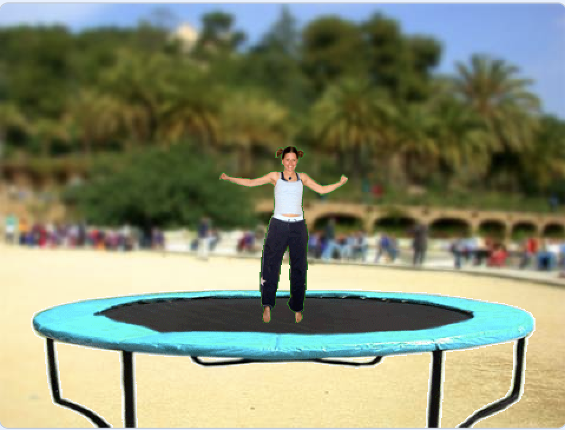
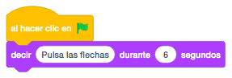
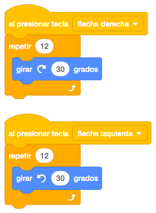
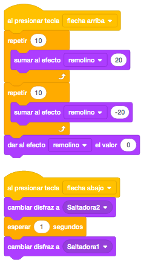
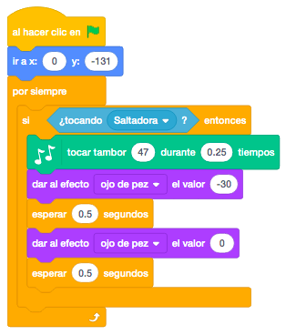

Los objetos los cogeremos de la biblioteca de Scratch y necesitaremos una persona que será la que salte y un trampolin.
El escenario también lo cogeremos de la biblioteca y podremos poner el que más nos guste.
El juego consiste en que nuestro personaje saltará continuamente en el trampolín.
Cuando pulsemos la tecla derecha o izquierda hará un circulo completo de 360 grados hacia el lado
correspondiente a la dirección pulsada.
Cuando pulsemos arriba o abajo podemos hacer cambios de disfraz o efectos gráficos.
Pondremos el fondo que más nos guste y el trampolín.
En el trampolín, lo primero que haremos será posicionarlo.
También pondremos la persona, en nuestro caso una saltadora y además de posicionarla, la moveremos
continuamente arriba y abajo con "Deslizar En Segs A X: Y:".

Nuestra saltadora dirá durante unos segundos que pulsemos las flechas del teclado para ver que pasa.

Si pulsamos la tecla derecha hará poco a poco un giro de 360 grados hacia la derecha.
Si pulsamos la tecla izquierda hará poco a poco un giro de 360 grados hacia la izquierda.

Si pulsamos la tecla arriba o abajo haremos cambio de disfraz o un efecto gráfico quitandolo a los pocos segundos.

Terminaremos de programar el trampolín. Cuando toque a nuestra saltadora, haremos un sonido y le pondremos el efecto de "Ojo De Pez" para que parezca que saltamos en el trampolín, quitándoselo a continuación.

Otro reto que se puede añadir al juego es añadir movimientos o efectos pulsando otras teclas.
Y el juego quedaría así.
Para ver el juego terminado pulsa
aquí.
Para descargarte el juego terminado pulsa
aquí.